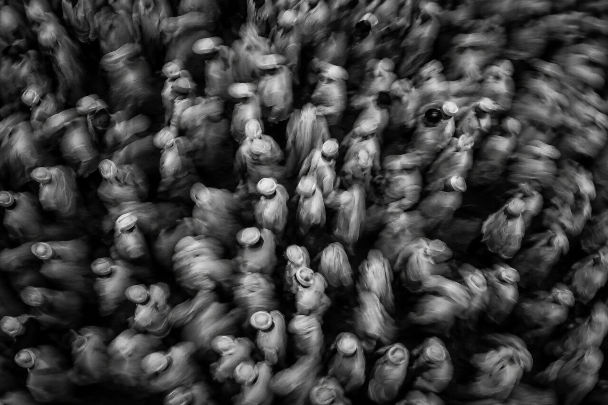

Festivals
Where culture
comes alive.
India is a living, breathing mosaic of traditions.
Thousands of festivals. Countless stories.
Many still waiting to be seen.
This is my front row.
Explore by theme
Art & Cultural
Art & Cultural
Festivals
India is home to over 1,000 festivals.
Here are some rare, raw, and remarkable celebrations most people don't even know exist.
Festival
Type
01
Faguli Festival
Chamoli, Uttarakhand
Ritual
→
02
Wari Festival
Pandharpur, Maharashtra
Cultural
→
03
Ganesh Festival
Mumbai, Maharashtra
Cultural
→
04
Durga Puja Festival
Kolkata, West Bengal
Cultural
→
05
Theyyam Festival
Kannur, Kerala
Ritual
→
06
Widow Holi
Vrindavan, Uttar Pradesh
Cultural
→
07
Mathura Holi
Mathura, Uttar Pradesh
Cultural
→
08
Raulane Festival
Maharashtra, India
Tribal
→
09
Hornbill Festival
Kisama, Nagaland
Tribal
→
10
Thrissur Pooram Festival
Thrissur, Kerala
Ritual
→
11
Dahi Handi Festival
Mumbai, Maharashtra
Cultural
→
12
Dev Deepavali Festival
Varanasi, Uttar Pradesh
Spiritual
→
13
Masan Holi
Varanasi, Uttar Pradesh
Ritual
→
14
Bhootakola Festival
Tulunadu, Karnataka
Ritual
→
15
Last Tattooed Headhunter
Arunachal Pradesh
Tribal
→
16
Losar Festival, Himachal
Spiti Valley, Himachal
Cultural
→
17
Dhuno Porano Festival
West Bengal, India
Spiritual
→
18
Kulasai Dasara Festival
Kulasai, Tamil Nadu
Ritual
→